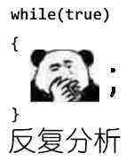
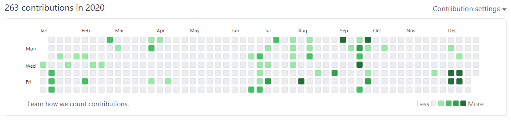

被MIT录取——申请中的大起大落
3月15日清晨6:30分
某人迷迷糊糊地刚刚从被窝里爬出来
迷迷糊糊地唤醒一夜没关的电脑
迷迷糊糊地点进MIT的portal
啊，果然status更新了呢，虽然不该抱什么期待的
自己这个水平申请纯属做分母哦，大概一定是thank you for applying to MIT这种套路话罢（确信）
为了彻底让自己死心点了进去并开始阅读
On behalf of the Admissions Committee, it is my pleasure to offer you admission to the MIT Class of 2025! You stood out ...
嗯？（要素察觉）
嗯？！？！？
千言万语在早晨上学的急忙中汇成一句话
草，居然录了？
然后简单地发了个朋友圈，吃完饭，开开心心上学去了。
学校申请的竞争是残酷的，所谓成王败寇莫不如是。抢救性写感言，各路学弟开始问经验，然后我其实一时半会并答不出来。另一方面，我在学姐的帮助下倒是在一个小时内就找到了组织见到了前几届MIT的学长，然后发现群里面个个都是集训队级别的大佬，区区国铜瑟瑟发抖。
一切都引向了一个我必须思考的问题：
我这么菜，为啥会被MIT看上呢？

论标化，自己的标化成绩在国内传统认知内对于MIT的申请只能称得上是堪堪够用。
论文书，因为自己原本对MIT的申请不抱特别大的希望，文书写的是中规中矩，没有特别多的灵光一现和奇妙构思。
论活动，自己没有上过许多国内奉为圭臬的夏校。没有辩论，没有模联，没有特别多社会活动。
论竞赛，自己国铜的最高水准大概只到了最低线？
论申请策略，自己直接说喜欢EECS的直球做法在许多人看来也是头铁。
那是为什么呢？
转了一圈，思绪回到1月6号申请最后一天在电脑前的奋笔疾书。
是了，原来如此，答案或许见诸于MIT申请系统的首页：
The key is to be yourself.
我在最后一天才意识到MIT的申请居然允许递交一份maker portfolio，那时的兴奋是无以言表的。
自己就把自己平时乱搞的小项目连简介带Github链接填了上去，填了九个，简介写了一千多个词，自己从未如此畅快。
想必让招生官高看我一眼的，大概就是这么多乱搞项目当中体现出来的对摸鱼计算机的一种热情？（暴论）
记得自己曾经做第一个小项目的时候，一方面是觉得自己开心，另一方面为未尝没有“如果项目牛逼了会不会被人赏识”的小功利心和小幻想。做了那么多小项目，快乐是总有的，但牛逼的项目是没有的，所以在高中的几年觉得大学申请愈发迫近也曾焦虑迷茫过，尝试过竞赛，但也难以完全投入精力，最终屈服于自己强大的摸鱼欲之下重操旧业。也不止一次地心中有“自己摸鱼做项目的时间是不是浪费了呢？”的疑问。
但是现实证明，所有的努力都不会被辜负。
当然，这也可以理解为是某人摸鱼主义哲学的大胜利（大雾）。

上图：当你摸鱼的contribution都状似摸鱼，你就达成了二阶摸鱼的至高境界，物极必反，这是MIT的隐藏通道
人啊，还是要有理想的，有理想地摸鱼，这就达成了一组矛盾的对立统一，矛盾摸鱼，乃摸鱼之大境界。
最后还是要说一句，Cornell你拒的好啊！
录了技校，人很开心，加上之前录了剑桥，所以现在就是一个去Cambridge还是去Cambridge读书的问题了，我选择去Cambridge。